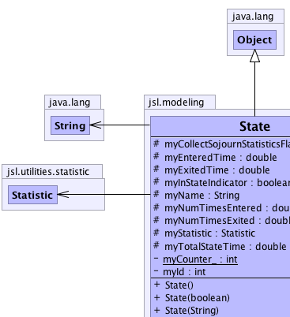
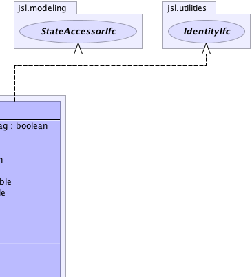
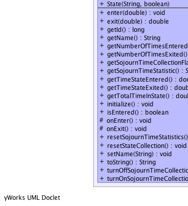
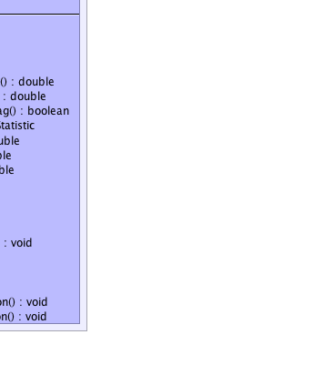

jsl.modeling.State
jsl.modeling.State
|
||||||||||
| PREV CLASS NEXT CLASS | FRAMES NO FRAMES | |||||||||
| SUMMARY: NESTED | FIELD | CONSTR | METHOD | DETAIL: FIELD | CONSTR | METHOD | |||||||||
java.lang.Object
public class State
|  |  |
|  |  |
| Field Summary | |
|---|---|
protected boolean |
myCollectSojournStatisticsFlag
Indicates whether or not statistics should be collected on time spent in the state. |
private static int |
myCounter_
incremented to give a running total of the number of states created |
protected double |
myEnteredTime
time the state was last entered |
protected double |
myExitedTime
time the state was last exited |
private int |
myId
The id of the state, currently if the state is the ith state created then the id is equal to i |
protected boolean |
myInStateIndicator
indicates whether or not currently in the state |
protected java.lang.String |
myName
The name of the state |
protected double |
myNumTimesEntered
number of times the state was entered |
protected double |
myNumTimesExited
number of times the state was exited |
protected Statistic |
myStatistic
statistical collector |
protected double |
myTotalStateTime
Total time spent in state |
| Constructor Summary | |
|---|---|
State()
Create a state with no name and do not use a Statistic object to collect additional statistics |
|
State(boolean useStatistic)
Create a state with no name |
|
State(java.lang.String name)
Create a state with given name and do not use a Statistic object to collect additional statistics |
|
State(java.lang.String name,
boolean useStatistic)
Create a state with given name and indicate usage of a Statistic object to collect additional statistics |
|
| Method Summary | |
|---|---|
void |
enter(double time)
Causes the state to be entered If the state has already been entered then nothing happens. |
double |
exit(double time)
Causes the state to be exited |
long |
getId()
Gets a uniquely assigned integer identifier for this state. |
java.lang.String |
getName()
Gets this model element's name. |
double |
getNumberOfTimesEntered()
Gets the number of times the state was entered |
double |
getNumberOfTimesExited()
Gets the number of times the state was exited |
boolean |
getSojournTimeCollectionFlag()
Indicates whether or not statistics should be collected on the sojourn times within the state |
Statistic |
getSojournTimeStatistic()
Gets a statistic that collected sojourn times |
double |
getTimeStateEntered()
Gets the time that the state was last entered |
double |
getTimeStateExited()
Gets the time that the state was last exited |
double |
getTotalTimeInState()
Gets the total time spent in the state |
void |
initialize()
Initializes the state back to new - not in state - enter/exited time = Double.NaN - total sojourn time = Double.NaN - enter/exited count = 0.0 - sojourn statistics reset if turned on |
boolean |
isEntered()
Gets whether or not the state has been entered |
protected void |
onEnter()
can be overwritten by subclasses to perform work when the state is entered |
protected void |
onExit()
can be overwritten by subclasses to perform work when the state is exited |
void |
resetSojournTimeStatistics()
Resets the statistics collected on the sojourn time in the state |
void |
resetStateCollection()
Resets the counters for the number of times a state was entered, exited, and the total time spent in the state This does not effect whether or the state has been entered, the time it was last entered, or the time it was last exited. |
void |
setName(java.lang.String str)
Sets the name of this state |
java.lang.String |
toString()
|
void |
turnOffSojournTimeCollection()
Turns off statistical collection of the sojourn times in the state |
void |
turnOnSojournTimeCollection()
Turns on statistical collection for the sojourn time in the state |
| Methods inherited from class java.lang.Object |
|---|
clone, equals, finalize, getClass, hashCode, notify, notifyAll, wait, wait, wait |
| Field Detail |
|---|
private static int myCounter_
private int myId
protected java.lang.String myName
protected boolean myInStateIndicator
protected double myNumTimesEntered
protected double myNumTimesExited
protected double myEnteredTime
protected double myExitedTime
protected double myTotalStateTime
protected Statistic myStatistic
protected boolean myCollectSojournStatisticsFlag
| Constructor Detail |
|---|
public State()
public State(java.lang.String name)
name - The name of the statepublic State(boolean useStatistic)
useStatistic - True means collect additional statistics
public State(java.lang.String name,
boolean useStatistic)
name - The name of the stateuseStatistic - True means collect sojourn time statistics| Method Detail |
|---|
public final void setName(java.lang.String str)
str - The name as a string.public final java.lang.String getName()
getName in interface IdentityIfcpublic final long getId()
getId in interface IdentityIfcpublic java.lang.String toString()
toString in class java.lang.Objectpublic final boolean isEntered()
isEntered in interface StateAccessorIfcpublic final void enter(double time)
time - The time that the state is being enteredprotected void onEnter()
public final double exit(double time)
time - the time that the state was exited, must
be >= time entered, >= 0, not Double.NaN not Double.Infinity
protected void onExit()
public final void initialize()
public final boolean getSojournTimeCollectionFlag()
public final void turnOnSojournTimeCollection()
public final void turnOffSojournTimeCollection()
public final void resetSojournTimeStatistics()
public final void resetStateCollection()
public final double getTimeStateEntered()
getTimeStateEntered in interface StateAccessorIfcpublic final double getTimeStateExited()
getTimeStateExited in interface StateAccessorIfcpublic final double getNumberOfTimesEntered()
getNumberOfTimesEntered in interface StateAccessorIfcpublic final double getNumberOfTimesExited()
getNumberOfTimesExited in interface StateAccessorIfcpublic final Statistic getSojournTimeStatistic()
getSojournTimeStatistic in interface StateAccessorIfcpublic final double getTotalTimeInState()
getTotalTimeInState in interface StateAccessorIfc
|
||||||||||
| PREV CLASS NEXT CLASS | FRAMES NO FRAMES | |||||||||
| SUMMARY: NESTED | FIELD | CONSTR | METHOD | DETAIL: FIELD | CONSTR | METHOD | |||||||||